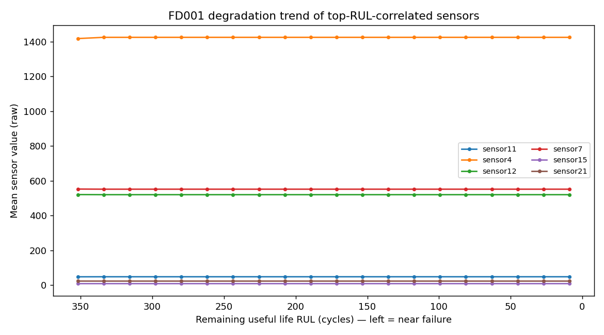
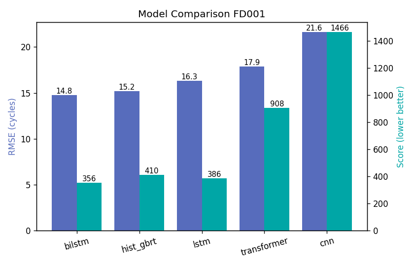

定期维修是个两难，RUL 是第三条路
风电、航空、制造的关键设备一旦突发故障，轻则停机、重则事故。传统「定期维修」的两头都不讨好—— RUL 预测把「什么时候修」变成一个可计算的问题。
检修间隔太长，退化在两次巡检之间悄悄发生——漏掉的故障代价最高。
宁可错杀不可放过：部件寿命没到就换，运维成本与停机时间双升。
C-MAPSS：先探索，再建模 NASA TURBOFAN BENCHMARK
每条轨迹 = 一台发动机从投入使用到失效的完整生命；每行 = 一个运行循环的 26 列快照（unit + cycle + 3 工况 + 21 传感器）。建模前用 EDA 回答四个问题：

- EDA-1该删的先删：6 个传感器（1/5/10/16/18/19）方差 ≈ 0（恒定），由
select_features自动剔除，保留 3 工况 + 15 有效传感器。 - EDA-2信号在哪：与 RUL 最相关的是 sensor 11/4/12/7/15/21（|Pearson| ≈ 0.64–0.70）——正是模型后续依赖的退化主信号。
- EDA-3建模思路验证：高相关传感器随 RUL 下降呈漂移，支持「用最近 W=30 循环滑窗捕捉退化」的设计。
- EDA-4难点预告：测试集 RUL 均值 75.5 / 标准差 41.6——测试发动机是在退化不同阶段被中途截断的，比跑到失效的训练集更难。这解释了测试误差高于训练，是 C-MAPSS 的核心难点。
不押注单一模型：四条路线同台对比
四条路线共用同一条预处理管线、同一个滑窗、同一套指标——差异只来自模型本身，对比才公平。
仅用训练集统计量拟合后变换测试集——防信息泄漏W=30 循环为样本；训练集滑窗增广，测试集取末 30 循环RUL(t)=末循环−t，裁剪到 [0,125] 稳定训练预测 RUL 与真实 RUL 的均方根误差，单位：循环（cycles），越小越好。
非对称得分：晚预测（高估剩余寿命）惩罚更重——因为"该修没修"的代价高于"提前检修"。理解指标的业务含义，比背公式重要。
实测结果 FD001 TEST · 全部实际训练产出
五模型测试集横评：BiLSTM 双指标最优（RMSE 14.79 / Score 355.7）—— 「用对的结构建模时序退化」的价值直接可读。
测试 RMSE（cycles，越低越好）
五模型对比 RAW ARTIFACT

runs/<model>_FD001/。ONNX 导出 + REST 服务 TRAIN-SERVE CONSISTENCY
模型脱离 PyTorch 由推理引擎加载，包一层 Flask 服务对接产线系统。 关键工程细节：推理端复现与训练完全一致的预处理（特征选择 + z-score 参数随模型一并导出），保证线上线下一致。
✓ 导出 ONNX（含预处理元信息：特征选择 + z-score 参数）
$ python utils/flask_rest_api/restapi.py --model bilstm --subset FD001 --port 5000
$ curl -X POST http://127.0.0.1:5000/predict \
-H "Content-Type: application/json" \
-d '{"engine_id":"FD001_001","cycles":[[...26 列...], ...]}'
{"engine_id": "FD001_001", "rul": 78.3, "unit": "cycles"}
诚实清单 WHAT'S TRUE, WHAT'S NOT DONE
所用公开镜像中 FD004 的训练/测试引擎数与官方口径恰好对调（训练 249 / 测试 248）。已实测校验镜像自洽并以镜像为准，差异与依据写进 docs/DATASET.md——不掩盖数据来源的任何不一致。
1D-CNN 过拟合严重（RMSE 21.6 / Score 1465.6），Transformer 得分 907.9——当前配置下未充分调参，结论只代表本配置，不代表这两类架构的上限。调优列入 §07。
FD001 为单一工况、单一故障模式，是四个子集中最容易出效果的；FD002–004（6 工况 / 双故障模式）尚未训练——结论不能直接外推到多工况场景，扩展列入 §07。
下一步 NEXT EXPERIMENTS
- P0FD002–FD004 多工况扩展
管线已按子集独立选特征自动适配（FD002/004 选中 24 特征）——多工况是 RUL 落地的真实形态 - P0CNN / Transformer 调优对照组
正则化 + 学习率调度 + 容量适配，验证"未调优"假设是否成立 - P1Score 感知的训练目标
把非对称代价写进损失函数，直接优化业务指标而非 RMSE 代理 - P1预测不确定性估计
点估计之外给出置信区间——维护决策需要"有多确信"，而不只是"还剩多少"